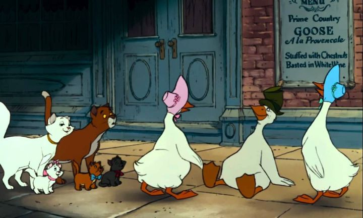

With "The Aristocats," we're getting into niche Disney film territory. I'm sure some people will remember it fondly, and likewise, it's a personal favorite of mine (second only perhaps to "101 Dalmations" in this era for Disney). But I'm sure a lot of people have also missed out on it, or perhaps not even heard of it, since its marketing and merchandising appeal wasn't as strong as the other animated movies. The movie also trends familiar beats in its story. We had dogs kidnapped and finding their way back home in "101 Dalmations." What if we did it with cats this time? Instead of the "Tramp" in "Lady and the Tramp," what if we had an alley cat named Thomas O'Malley, voiced by the actor that did a similar character (Baloo) in the prior movie "The Jungle Book"? What if we had country farm animals as side characters, and a bumbling villain, again matching "Dalmations"? Instead of modern day England or the USA, what about France? I could go on, and thankfully this was the last significant copy of the formula. But even as a copy, some of the additions arguably make this the most fun out of the "pet" trilogy. Set in France, specifically in a stately home in an upper class neighborhood, the setting and the humans immediately remind me of my older aunts and great uncles from "the old country," dressing their homes and closets in fine clothing and furniture that you simply can't get anymore, but their owners so old by the time I met them that they could barely use any of it. This is where a retired opera singer lives, white hair made up elegantly to match her jewelery and gowns that she wears as everyday clothing. She lives with her beloved and pampered pet cats, the mother Duchess and her three kittens. The cats aren't particularly rude from their spoiled upbringing, but want for nothing and never experience hardship (the kittens even practice finer things like music, singing, and painting). In an early scene, we're introduced to a side character, Georges the lawyer, a man so old and high-spirited that his every step and stumble makes a scene. And more importantly, there's Edgar, the house's butler, a pot-bellied man that's loyal to his master and her kittens, and generally seems pleased with his post, despite all the work required.... until he overhears the master and Georges writing out her will, and learns that her fortune would be left upon her death, not to him (as she has no family), but to the cats! Edgar would be second should anything happen to the cats, anyway. After years of servitude, Edgar gives into a momentary plan of greed, and plots to kidnap the cats and abandon them far away, claiming that they ran off on their own. Sure enough, the cats are stranded in the French countryside, and with help from the bold and romantic stray cat O'Malley, have to find their way back home (and ultimately fight back when Edgar realizes his plan didn't work).  There's a lot of humor and gags to carry the movie, much of which comes from Edgar. He isn't as evil as Disney's past villains, and his silly character design and tendency to bumble and make mistakes paint him as comic relief more than a threat. Curiously, the stars of the movie aren't really the main characters, but all the colorful side characters. There's a sideplot of Edgar trying to retrieve his motorcycle from a pair of protective farm dogs. On their way back, the cats come across a pair of gabbling geese, and later a third goose that drank a bit too much Grey Goose, if you know what I mean. And there's O'Malley's old gang, the Cool Cats, a multicultural group of strays that play wild scat-jazz music at night, giving us the standout song "Everybody Wants To Be a Cat". While it was well-meaning at the time, nearly all attempts at "multicultural" groups involved some form of stereotype to differentiate the characters, and sadly, the jazz cats don't age well. But everyone is fun to watch and listen to, as if everyone drank a little too much brandy before lunch. As for the main characters... I suppose the kittens are cute, but they're a little obnoxious for my taste. Duchess is a perfect princess of a cat, but perhaps a little too proper and trusting, while also being unnaturally open to new ideas and music styles. O'Malley steals every scene he's in when paired with this cat family, but his romantic flirting with Duchess comes across as a little gross at first (Duchess catches on quickly, and is subtle to hint so with her kittens around), and their eventual marriage feels like it skipped a few steps (perhaps because "Lady and the Tramp" already covered that in detail). Disney was still using the messy Xerox-technique to save on costs with "The Aristocats," but it does wonders to give the movie extra personality. Every wrinkle and double-chin on the human characters are scratchily drawn and are all the more fun to watch in motion. The general design and animation quality feels like a slight improvement from "101 Dalmations." As one of the kittens describes it, the music has some bounce to it, and while there aren't a lot of vocal songs, there's a good mix of modern swing and classical French ballads. "The Aristocats" is a familar, but still effective Disney movie, thanks to a larger sense of fun and a great sense of place in Paris, France.
- "Ani" More reviews can be found at : https://2danicritic.github.io/ Previous review: review_The_Animatrix Next review: review_The_Big_Bad_Fox_and_Other_Tales